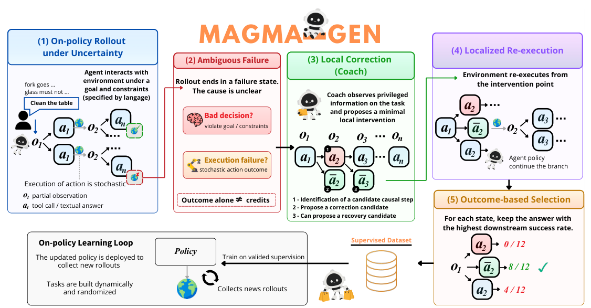
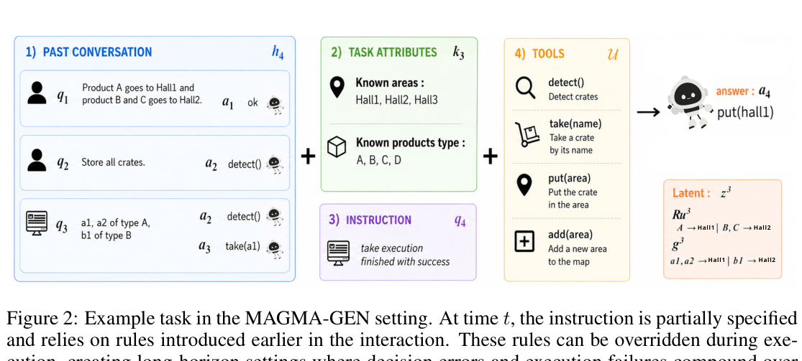

失败驱动数据生成
反事实重新执行
长时程操作
恢复监督
CoRL 2026 · arXiv 2609.20056
MAGMA-GEN：通过反事实重新执行，从模糊失败中提取验证过的恢复监督
MAGMA-GEN: Validated Recovery Supervision from Ambiguous Failures via Counterfactual Re-Execution
Loan Bernat, Matthieu Grard（Siléane）· Ariane Herbulot, Florent Lamiraux（LAAS-CNRS）
一句话总结：长时程操作的失败 rollout 是因果模糊的：糟糕的下游状态可能来自错误的高层决策、不完美的观测、或者一个正确决策碰上了执行失败。把每个失败都当决策错误会污染信用分配，忽略失败又学不到恢复。MAGMA-GEN 用特权 coach假设一个早期决策级错误并提出局部纠正/恢复动作，再用反事实重新执行验证——只有"从同一状态、匹配条件下重跑能改善下游进展"的候选才保留为监督。这样从智能体自己的失败分布里产出监督样本，无需逐步人类演示。
01摘要解读
分层机器人系统执行长时程操作任务时，必须做高层语义决策来编排随机的低层技能。此时失败的 rollout 是模糊的：糟糕的下游状态可能反映无效的高层决策、部分观测、或一个有效决策的物理执行失败。传统监督学习缺少这类恢复状态的数据，强化学习又苦于稀疏奖励与非局部信用分配。
本文提出 MAGMA-GEN，一个 on-policy 数据生成流水线，把模糊的失败 rollout 转化为验证过的恢复监督：特权 coach 先假设一个早期决策级错误、提出局部纠正或恢复动作；由于诊断可能出错，只有从同一状态、匹配条件下重新执行能改善下游进展的候选才被保留。在交互式长时程操作任务上，MAGMA-GEN 取得比蒸馏与轨迹修复基线更高的观测任务成功率与恢复率；真机试验验证了在演变任务约束下的迁移可行性。
26.25%
恢复率（最强基线 16.66%，+9.59 分）
38.35%
B=2 时累计成功率（B=1 为 16.79%）
54.54%
coach 提议被反事实验证的比例（CLEANER 仅 30.97%）
15/30
Franka 真机成功率（vs 12/30、11/30 基线）
02研究背景与动机（Introduction）
静态基准 vs 现实交互的鸿沟
长时程交互式操作要求机器人系统在部分观测 + 演变规则下运行，小错误随时间累积。与静态、固定目标的基准不同，真实部署要求智能体适应动态用户偏好、异常、以及顺序揭示的指令。关键观察：智能体在孤立的单步指令上训练评估时可能显得能干，但在多轮交互部署中会迅速退化。因此，专家示范只覆盖了状态空间的一小片，鲁棒的智能体必须从自己的规划错配或随机物理执行所诱导的 off-nominal 状态中学习。
核心困难：失败的因果模糊
为什么不能直接把失败当监督
一个失败 rollout 的糟糕下游状态，可能来自三种截然不同的原因：
无效的高层决策（决策错）、
有效决策但物理执行失败（执行噪声）、或
部分观测。把每个失败都当成决策错误会污染信用分配；忽略失败又无法学习恢复。有效学习需要一种方式，
区分哪些失败应成为决策级监督、哪些应诱导恢复行为。
现有方法的不足
- RL（Retool 等）与轨迹修复（CLEANER、AutoTraj）只部分解决：缺乏在部分可观测与动作噪声下，把局部诊断与匹配反事实验证相结合的机制；
- CLEANER 靠回滚删除错误片段，AutoTraj 用纠正后的轨迹替换失败轨迹——但都不区分决策错误与执行失败。
MAGMA-GEN 的定位
一个失败驱动的数据生成框架：把模糊的 on-policy 失败转化为高层决策策略的监督训练数据。保留失败 rollout、加入局部验证过的纠正，让学习者在自己的状态分布内接触失败状态与恢复行为，同时保持监督学习目标（避开稀疏奖励与非局部信用分配）。

图 1：MAGMA-GEN 总览。(1) 不确定性下的 on-policy rollout；(2) 模糊失败（执行失败？坏决策？）;(3) coach 观察特权信息提出最小局部干预（定位候选因果步 → 提出纠正 → 可提出恢复动作）；(4) 从干预点局部重新执行；(5) 基于结果的筛选（保留下游成功率最高的答案）。
03问题形式化
3.1 任务状态与 POMDP
任务 T = (G, Rᵤ, K, U)：目标空间 G、交互派生的任务规则 Rᵤ、结构化任务属性 K、可用工具 U。执行建模为因子化 POMDP。智能体不直接观测潜在状态，只收到观测 ot=(kt, qt)（结构化属性 + 用户指令或工具反馈）。没有逐步奖励，只有稀疏的二值任务完成信号。动作 at=(aᵤ, aᵐ) 是自然语言响应 + 可选工具调用。
3.2 有效性与模糊性（核心抽象）
valid(at, zt) ∈ {0, 1}——区分"决策正确性"与"执行结果"
一个无效动作对应决策错误；一个有效动作仍可能因随机执行而失败。这个有效性信号永远不可直接观测——智能体只能看到随机环境动力学产生的交互结果 qt+1。因此观测到的失败在因果上是模糊的：同一负面结果既可能来自无效决策，也可能来自有效决策遭遇执行噪声。这正是需要"局部信用分配 + 反事实验证"的动机。

图 2：MAGMA-GEN 场景示例。时刻 t 的指令是部分指定的、依赖交互早期引入的规则；这些规则可在执行中被覆盖，形成决策错误与执行失败随时间累积的长时程场景。
04方法：Coaching 驱动的失败监督
MAGMA-GEN 把每个失败 rollout 分成阶段（stage），每个阶段对应一个活跃目标 g⁽ʲ⁾ 与活跃规则 R⁽ʲ⁾ᵤ。当阶段子轨迹未能完成目标时，执行失败类型化 → 诊断 → 反事实干预三步。
4.1 失败类型化（Failure Typing）
先根据仿真器状态给失败一个粗略类别 c⁽ʲ⁾（目标失败 / 次优完成 / 缺失动作 / 无效工具调用 / 格式失败 / 文本一致失败等），用于限制干预空间。类别不当作监督，只用于约束与条件化诊断。
4.2 局部诊断（Localized Diagnosis）——coach 是"提议分布"而非 oracle
ℓ* = min{ t | valid(at, zt) = 0 } （理想干预点 = 第一个决策错误步）
由于 valid 不可观测，coach 建模为提议分布，从阶段段、失败类别、特权任务规格中采样候选干预索引 ℓ 与结构化诊断 d⁽ʲ⁾。实现上 coach 是一个 LLM prompt，约束返回"疑似决策错误步 + 简短诊断"。特权变量 z⁽ʲ⁾ 只在数据生成期间可用，智能体从不直接观测它。
4.3 反事实干预（Counterfactual Intervention）
I⁽ʲ⁾ ⊆ { ãℓ, ãℓ+1 } （纠正 ãℓ 替换可疑动作 / 恢复 ãℓ+1 插入其后）
- 纠正（correction）：替换疑似出错的决策（如把"先放黄块"换成"先放绿块"以遵守绿优先规则）；
- 恢复（recovery）：在执行失败后插入反应动作（如有效抓取失败后，策略误发"放置"命令——coach 定位这个后续决策并换成另一次可接受的抓取尝试）。
关键洞察：底层执行失败本身不必是决策错误——抓取失败后"当作成功继续放置"才是决策错误。MAGMA-GEN 因此学会对执行失败的高层正确响应，而不修改底层感知/控制技能。
4.4 反事实重新执行与子树评分（核心验证机制）
因为 coach 提议可能错，每个提议干预都当作候选分支而非标签：把仿真器恢复到父状态 st，执行干预 ãt，让当前策略继续直到阶段成功或失败。原始 rollout 与其反事实续接存成一棵树。为增加密度，每个展开状态从策略采样 B 个动作（分支因子）。对每个状态 sᵢ 的每个候选动作 a，定义子树成功分数：
Succj(sᵢ, a) = (1/|RK|) Στ∈R_K 1{τ 完成阶段 j}
对每个状态，选最高分动作 a* = arg max Succ，且只有 Succ > 0 才加入数据集（所有候选都零成功的状态被丢弃，避免训练在无信息失败上）。策略、coach 提议一视同仁，不偏袒 coach。
4.5 监督学习
LMAGMA(θ) = − Σ(m,o,a)∈D log πθ(a | m, o, U)
保留的分支源自当前策略采样的轨迹、并从匹配父状态重新执行，因此监督扎根于策略自己的状态分布，同时覆盖了精心整理的专家数据集里缺失的恢复状态。结构化不确定性（抓取不稳、可达性失败、部分检测、缺失反馈）在阶段开始时采样一次、跨兄弟分支保持不变，保证分支间的公平比较。
05实验设置
实验平台与场景
- 仿真器：ManiSkill3（GPU 并行化机器人仿真）；
- 真机：Franka Emika（冻结策略 + M2T2 分割模型 + HPP 规划，无 coach、无仿真器、无数字孪生）；
- 基准含 279 个 held-out 任务、四个场景（Make Coffee、Warehouse Sorting、Laundry、Color Sorting），时程 3–18 个高层动作；另有 Delivery、Press Button 仅训练，Sorting 为 OOD 真机场景。
评估指标
- CSR（累计成功率）：完整长时程 episode 成功的比例；
- CGC（首次不可恢复失败前的完成目标比例）：衡量"失败前推进了多少"；
- Recovery rate（恢复率）：在固定 60 任务恢复套件上，注入错误（漏检、抓取失败、不可达物体反馈）后是否仍完成活跃子目标。
对比方法（同一 Qwen3-4B 基座微调）
| 方法 | 失败处理方式 |
|---|
| Best-of-N Distill. | 失败子目标最多重试 N=10 次，保留成功重试分支 |
| Expert Rollout Distill. | 20B 教师 + 特权规格 + CoT，只保留成功 rollout |
| CLEANER-adapted | 检测到首个可见错误立即替换动作 + 重跑（不诊断决策） |
| AutoTraj-adapted | 事后一次性修复完整失败轨迹（无状态恢复、无重执行验证） |
| MAGMA-GEN（本文） | 诊断 + 纠正 + 恢复 + 反事实重新执行验证 |
所有方法在相同 180 个种子任务实例上运行（相同任务定义、有序子目标、步数上限）；MAGMA-GEN 用 4B rollout 策略 + 20B coach，基线用 20B 专家 rollout。
06实验结果与分析
6.1 主结果（Q1/Q2）：恢复与长时程双提升
| 方法 | Recovery | CSR | CGC |
|---|
| Best-of-N Distill.（4B） | 1.66 | 4.99 | 14.57 |
| CLEANER-adapted（4B→20B） | 2.23 | 2.40 | 11.34 |
| Expert Rollout Distill.（20B） | 12.50 | 7.30 | 14.06 |
| CLEANER-adapted（20B→20B） | 12.77 | 15.82 | 28.24 |
| AutoTraj-adapted（20B→20B） | 5.00 | 12.93 | 23.60 |
| Best-of-N Distill.（20B） | 16.66 | 14.15 | 26.73 |
| MAGMA-GEN（B=1，4B→20B） | 26.25 | 16.79 | 30.74 |
- 恢复率：26.25%，比最强基线（Best-of-N 16.66%）高 9.59 分，且用的是 4B rollout 而非 20B 专家；
- AutoTraj 提高 CSR/CGC 却把恢复率从 12.50% 降到 5.00%——修复完整轨迹并不会优先产生恢复监督；
- CLEANER 的即时纠正改善长时程却只到 12.77% 恢复——只修检测到的失败、不诊断责任决策，恢复监督质量低；
- CSR 16.79% + CGC 30.74% 的联合提升说明恢复监督帮策略"推进更远"而非与长时程性能此消彼长。
6.2 Q3：规模与真机迁移
| 方法 | CSR | Recovery | 真机（OOD） |
|---|
| CLEANER-adapted | 15.82 | 12.77 | 11/30 |
| Expert Rollout Distill.（B=2） | 26.99 | 18.33 | 12/30 |
| MAGMA-GEN（B=2） | 38.35 | 40.0 | 15/30 |
分支因子 B=1→2 把 CSR 从 16.79% 提到 38.35%、恢复率从 26.25% 提到 40.0%。真机上 MAGMA-GEN 15/30 成功（含漏检、抓取失败、人类移动物体），vs Expert Rollout 12/30、CLEANER 11/30。
6.3 机制消融：coach 与重新执行缺一不可
| 变体 | Coach 提议 | 重执行验证 | Recovery | CSR |
|---|
| No Coaching | 否 | 否 | 1.66 | 4.99 |
| No Re-Execution | 是 | 否 | 5.00 | 8.21 |
| MAGMA-GEN | 是 | 是 | 26.25 | 16.79 |
- 去掉重执行验证（直接把 coach 提议当标签）：恢复率从 26.25% 跌到 5.00%；
- 去掉 coaching：跌到 1.66%——两者对从 rollout 里提取有意义数据都至关重要。
6.4 诊断是否提高纠正有效性？
3114 个 coach 提议中（84.8% 纠正 + 15.2% 恢复），54.54% 被反事实验证，而 CLEANER 的即时纠正在同一判据下只有 30.97%——诊断确实帮助在纠正前定位"导致失败的决策"。且 3769 个保留样本里，1464 个是选中的 coach 提议、1536 个是经这些干预到达的下游 on-policy 状态，合计占数据集 79.60%。
随机训练失败是否必要？在数据生成期间注入执行失败，把 Recovery 从 14.17 提到 26.25、CSR 从 12.05 提到 16.79——随机训练失败让策略接触到恢复所需的 off-nominal 状态。
07核心 Insights
1. 失败是"信号"也是"噪声"——反事实验证是那把筛子
coach 的诊断可能错，不能直接当标签。用
匹配条件下的反事实重新执行（恢复同一状态、扰动固定、看下游进展）来筛选，把"误导性诊断"从"有用的纠正/恢复"里分出来——这是全文最核心的方法论贡献。
2. 决策正确性 ≠ 执行结果，二者必须解耦建模
引入不可观测的 valid(a,z) 变量，把"决策错"和"有效决策遇执行噪声"区分开。只有解耦了，才能让"抓取失败后继续放置"这类
后续决策错误被准确定位——底层失败不必是决策错，错的是对失败的错误响应。
3. "修轨迹"≠"产生恢复监督"
AutoTraj 修完整轨迹反而让恢复率下降，CLEANER 修检测到的错误也只到 12.77%——因为它们不诊断
导致失败的决策。局部诊断 + 验证，才把数据质量拉到 26.25%。
4. 让策略"在它自己的失败分布里学习"
MAGMA-GEN 保留失败 rollout 并加局部纠正，而非用专家干净轨迹替换。这让学习者在
自己的状态分布内接触失败与恢复，弥补了专家数据集只覆盖窄状态切片的根本缺陷。
5. 监督学习 + 反事实验证 > 稀疏奖励 RL
通过"子树成功分数选最优动作"的监督目标，MAGMA-GEN 避开了稀疏奖励下 RL 的不稳定与非局部信用分配，却仍能学到恢复行为——
数据生成侧的验证取代了奖励侧的信用分配。
08局限与链接
局限
- 只能恢复"现有高层动作能处理"的失败，无法从技能无有效续接的物理状态恢复；扩展到连续控制需不同的干预提议器（visuomotor 策略 / 轨迹优化器）；
- 数据生成需特权访问可恢复的仿真器状态 + 足够保真的任务级动作后果；执行/观测动力学不匹配会让验证过的干预在真机上失效；
- 绝对成功率仍不高（基准刻意叠加长时程、演变规则、部分观测、执行失败）；语言策略骨架本身不适合鲁棒长时程记忆与规划。
论文与代码链接